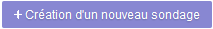
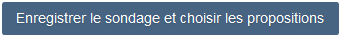

Créer un sondage
Pour commencer, cliquez sur le bouton "+ Création d'un nouveau sondage" présent sur la page d'accueil :

décrire le sondage
choisir les propositions
inviter les participants
1. Décrire le sondage
Un formulaire va vous permettre de donner un titre à votre sondage, d'indiquer éventuellement un lieu et de saisir un message explicatif destiné aux participants :
C'est également par cet écran qu'est choisi le type de sondage :
- le sondage de date pour convenir à plusieurs d'un rendez-vous, d'une réunion, d'un événement...
- le sondage libre pour effectuer des petites enquêtes en soumettant une liste de propositions personnalisée à vos interlocuteurs
Enfin, les options avancées sont utilisées pour paramétrer l'accès à votre sondage et les fonctionnalités pour les réponses :
- lorsque son accès est restreint (coché par défaut), seules les personnes ayant un compte Mélanie2 peuvent y participer ; l'affichage du sondage ne se fait qu'après validation par l'application de l'identifiant (prénom.nom) et du mot de passe du participant
- lorsque l'option n'est pas cochée, l'enquête est ouverte tant en interne qu'aux partenaires extérieurs ; les sondés saisissent librement leur nom mais l'identification ne peut être contrôlée.
- avec cette option les participants doivent se positionner pour chacune des propositions en choisissant "Oui", "Possible" ou "Non"
- lorsque l'option n'est pas cochée, les sondés peuvent répondre à tout ou partie des propositions ou éventuellement n'en choisir aucune.
- dans le cas d'un sondage anonyme, seul l'organisateur a connaissance des choix des participants. Ceux-ci ne les découvriront qu'à la fin du sondage
- lorsque l'option n'est pas cochée, un lien "Afficher la liste des participants" leur permet de voir qui a répondu et quoi.
Après avoir renseigné la fiche descriptive du sondage, vous devrez l'enregistrer pour passer à l'étape suivante :

2. Choisir les propositions
Selon le type de sondage que vous allez effectuer, vous aurez accès :
- soit à un calendrier pour décliner les dates auxquelles l'événement pourrait avoir lieu
- soit à un formulaire pour lister les différentes propositions que vous souhaitez soumettre aux participants
Votre sondage est prêt dès lors où toutes les propositions sont positionnées et enregistrées. Il ne vous reste plus qu'à inviter les participants.
3. Inviter les participants
La participation à un sondage se fait en ligne, à l'adresse internet communiquée par l'organisateur.
Une fois terminé, un message vous informe que votre sondage est créé et vous indique l'url à partager avec vos invités :
Vous recevrez également dans votre courrielleur un mail contenant le lien vers la page de votre sondage.
Vous pourrez recopier cette adresse et la transmettre par messagerie à vos participants :